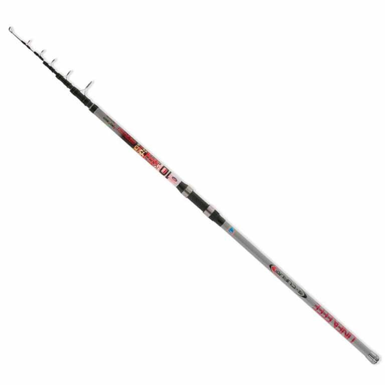
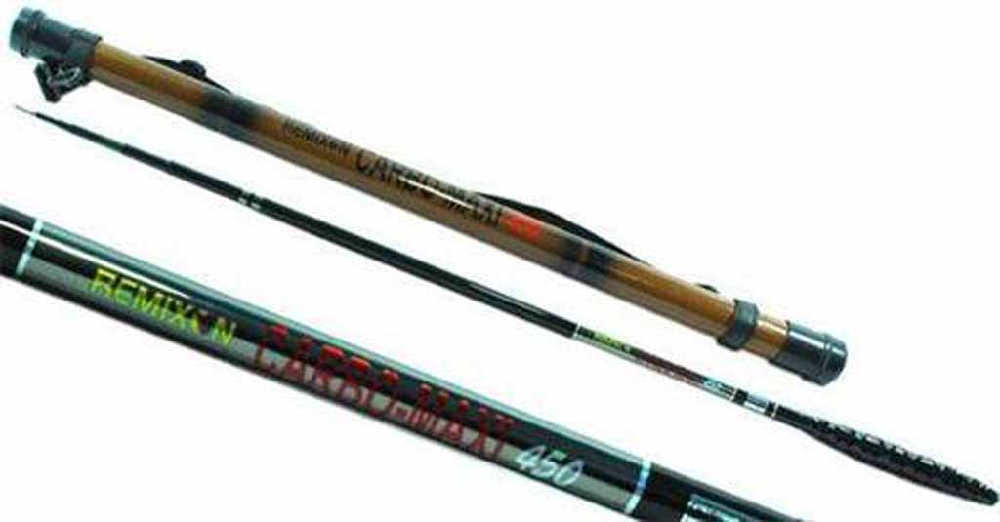
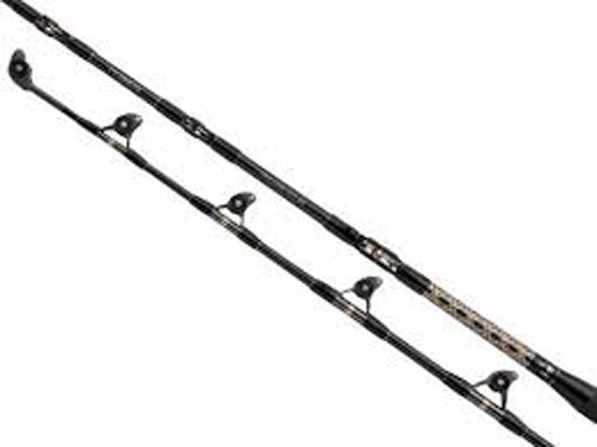
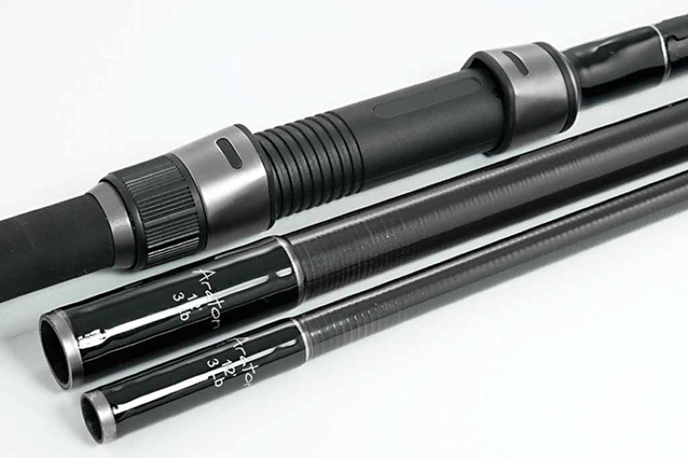

Teleskopik kamışlar
Genel olarak her türlü balık avında kullanılabilen modellere sahip iç içe geçmeli çok parçadan oluşan ve porselen misina kılavuzlu kamış modelleridir.

Surf Kamışlar
Kıyıdan çok uzağa atış yapabilmek için tasarlanmış ve genellikle boyutları 360-450 cm arasında olan uzun saplı ve yüksek ağırlıklarda kurşunları atabilen özel seri kamışlardır.
Bu kamışlarda atış esnasında misina sürtünmesini azaltmak için misina kılavuzları olabildiğince azaltılmıştır ve özellikle surf makinelerle kullanılması tavsiye edilen atış performansı yüksek kamışlardır.

Porselensiz kamışlar
Genellikle tatlı suda mantarlı balık avında kullanılan, teleskopik kamışlar gibi iç içe geçmeli çoklu parçadan oluşan fakat porselen misina kılavuzları olmayan ve makinesiz kullanılan modellerdir.

Çıkrık kamışlar
Teknede büyük balık avı yaparken çıkrık makinelerle birlikte kullanılmak üzere tasarlanmış çok yüksek dayanıklılıkta olan kamış modelleridir.

Paçalı kamışlar
Birbirinden bağımsız iki veya üç parçadan oluşan ve birbirine takılarak makineyle birlikte kullanılan modellerdir. Parçalı kamışlarda 2 tip genel kullanım alanı vardır. Birincisi; Bot ve teknede kullanılan kısa boylu modeller ikincisi; kıyıdan avda surf tipi atışlar için uzun ve spin tipi ince, hassas, yaylanır modeller.